|
|
Путь к странице > Главная > Практика основ |
|
|
Путь к странице > Главная > Практика основ |
|
|
Путь к странице > Главная > Практика основ |
|
ШАГ 1 - Ваша первая строка кода |
Что такое HTML простыми словами?
HTML - это не язык программирования, а язык разметки. Представьте, что вы пишите письмо и выделяете заголовок жирным, а важные слова подчёркиваете. HTML делает тоже самое, но для веб-страниц.
Для написания первой строки кода понадобится БЛОКНОТ и БРАУЗЕР
1 ДЕЙСТВИЕ
Cоздайте на рабочем столе новую папку с названием “мой первый сайт”
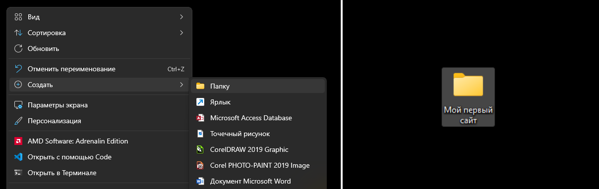
2 ДЕЙСТВИЕ
Внутри папки создайте текстовый файл. назовите его index.html
Важно!
расширение должно быть именно .html, а не .txt. Если не видите расширение - включите их отображение в настройках проводника.
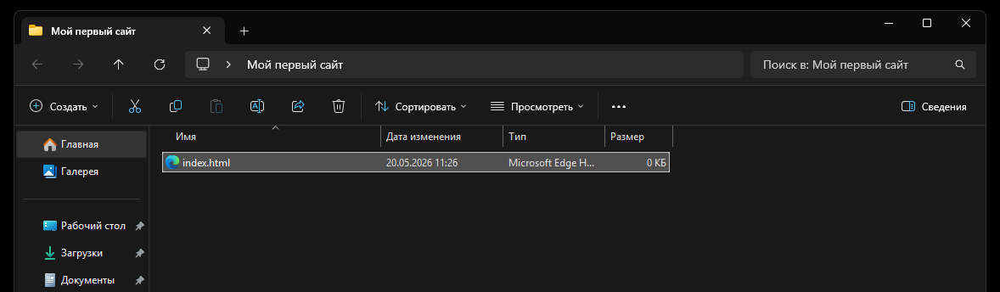
3 ДЕЙСТВИЕ
Откройте этот файл через блокнот или любой текстовый редактор. Напишите внутри что-нибудь. Например, “привет, мир!”
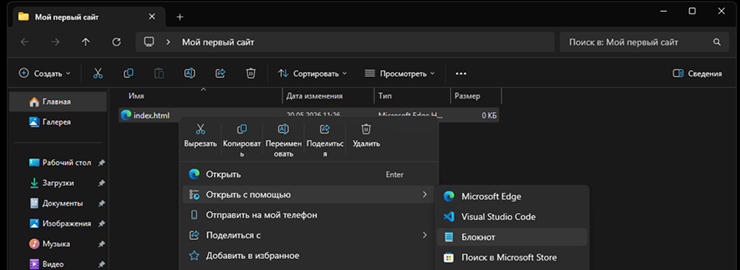
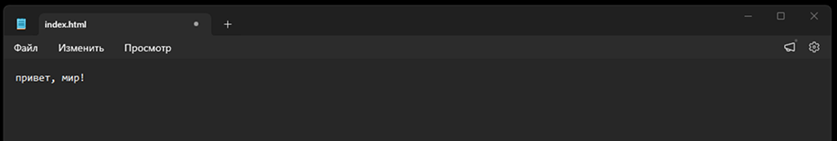
4 ДЕЙСТВИЕ
Сохраните файл ( Ctrl + S ). Теперь откройте его двойным щелчком ( ЛКМ ) - он запустится в браузере.
Что вы увидите? Чистую белую страницу с вашим текстом.
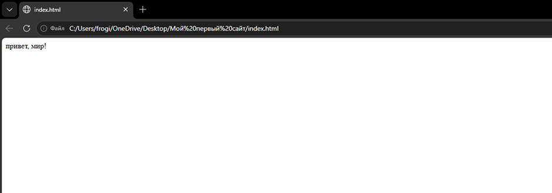
Поздравляю! Вы только что создали и открыли свою первую веб-страницу.
|
ШАГ 2 - Правильная структура документа Подробнее о структуре документа можно прочитать в основах HTML |
То, что вы написали в первом шаге работает, но так делать не принято. Браузер дорисовывает недостающие части сам, но для дальнейшей работы требуется не только простой текст.
Обязательная структура любого HTML-документа:
|
<html>
<head> ⠀⠀⠀<title> Вкладка </title> </head> <body> Тело </body> </html> |
html - даёт браузеру информацию о использовании HTML head (голова) - настройки страницы, которые не видны пользователю title - название вкладки браузера body (тело) - сама страница сайта. то, что видят пользователи |
ПРАКТИКА
ЗАДАНИЕ: возьмите ваш файл index.html из первого шага и полностью замените его содержимое на обязательную структуру html-документа (должны присутствовать теги html, head, title и body)
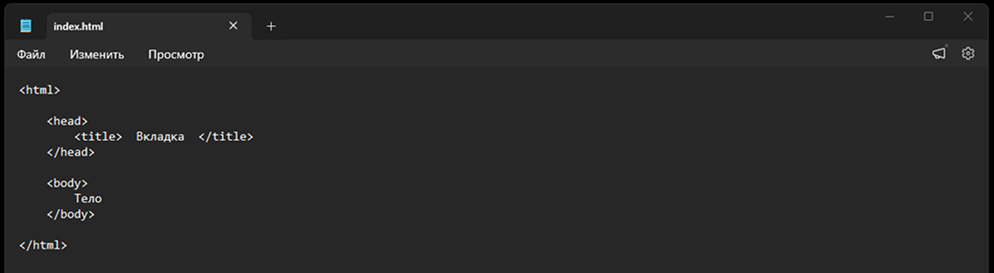
1. Напишите название для вкладки вашего сайта внутри тега title.
2. Вставьте любой текст или стихотворение/песню внутри тега body.
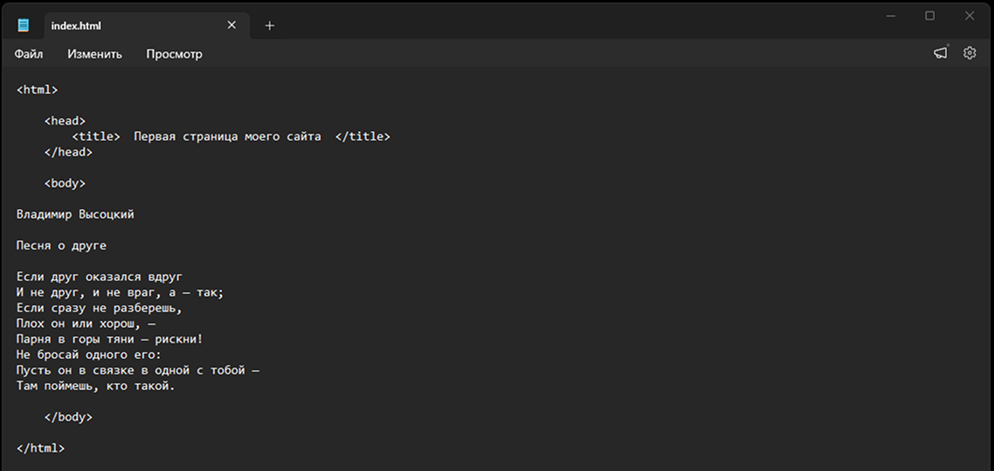
3. Сохраните файл и обновите страницу в браузере. Сами теги на странице не отображаются - так и должно быть.
4. Посмотрите на вкладку - у неё появилось название.
5. Обратите внимание на ваш текст. Если в вашем файле присутствуют отступы или абзацы, то без дополнительных тегов их не будет видно.
|
ШАГ 3 - Форматирование текста Подробнее о том, как устроены теги, можно прочитать в основах HTML |
Большинство тегов выглядит так:
<открывающая часть> содержание <закрывающая часть>
открывающая часть - включает команду в том месте, где она расположена.
закрывающая часть - аналогична, но отключает команду.
Запомните:
если забыть закрывающую часть тега, сам тег и команда не будут работать.
ПРАКТИКА
ЗАДАНИЕ: Откройте ваш файл index.html. Внутри тега body удалите то, что там есть, и вставьте текст любого стихотворения или песни (если ещё не сделали этого на предыдущем шаге). Обязательно укажите автора и название - это понадобится нам в дальнейшем.
1. Расставьте следующие теги:
<h1> . . . </h1> - заголовок первого уровня. для названия стихотворения/песни.
<h2> . . . </h2> - заголовок третьего уровня. для автора.
<p> . . . </p> - тег обычного абзаца. там, где располагается закрывающая часть, текст обрывается и переносится на следующую строку.
<br> - одиночный тег без закрывающей части. служит в качестве пустой строки. можно вставить между заголовками и текстом.
Сохраните файл и обновите страницу в браузере. Исправьте ошибки при их наличии.
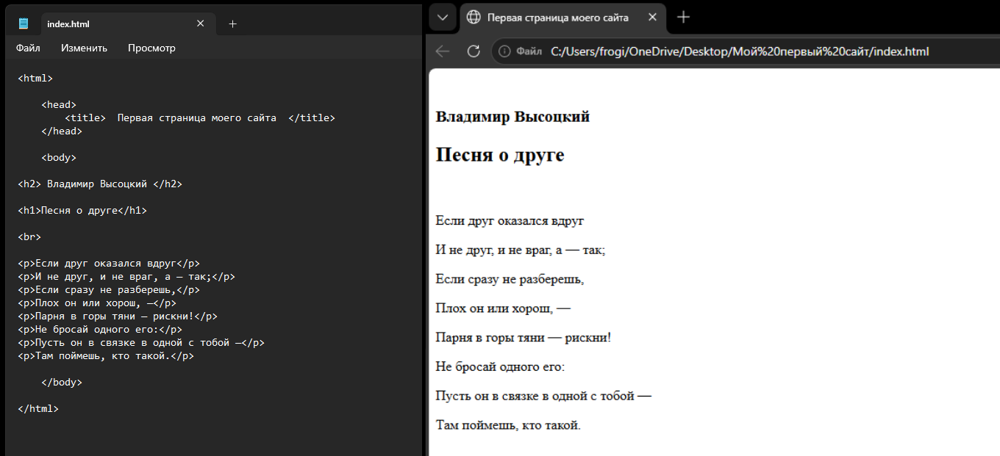
2. Попробуйте на деле эти теги:
<b> . . . </b> - жирный шрифт. важный, серьёзный акцент.
<i> . . . </i> - курсивный шрифт. эмоциональный акцент
<u> . . . </u> - подчёркивание текста.
<s> . . . </s> - зачёркивание текста.
<tt> . . . </tt> - создает текст, имитирующий текст печатной машинки.
<hr> - одиночный тег без закрывающей части. ставит горизонтальную черту.
Сохраните файл и обновите страницу в браузере. Исправьте ошибки при их наличии.
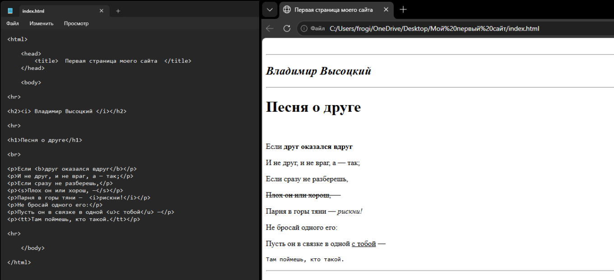
Чего-то не хватает? Тексту можно задать шрифт и цвет.
3. Давайте попробуем это сделать c помощью применения стиля для тега.
<p style = "color: #000000>"> . . . </p> - шестнадцатеричным значением с решёткой зададим цвет текста для выбранного p. Вместо #000000 (это чистый чёрный) вставим другой цвет. Например, #FFDB8B.
<p style = "color: #FFDB8B; font-family: georgia"> . . . </p> - а здесь выберем шрифт и добавим его всё в тот же p.
Будьте внимательны:
не забывайте расставлять верные знаки! например, " " (в них заключается сам стиль для применения) и ; (служит для перечисления) - без них команда не заработает.
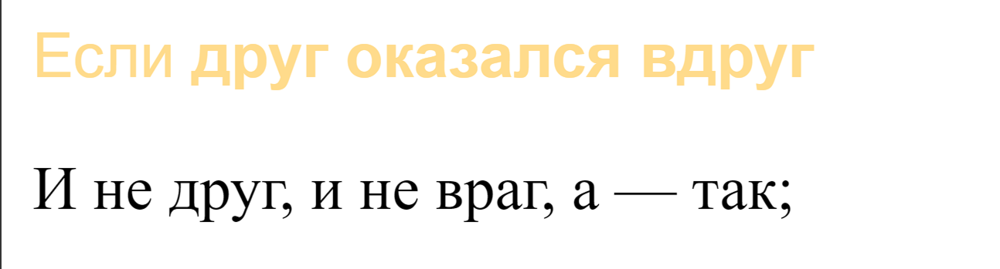
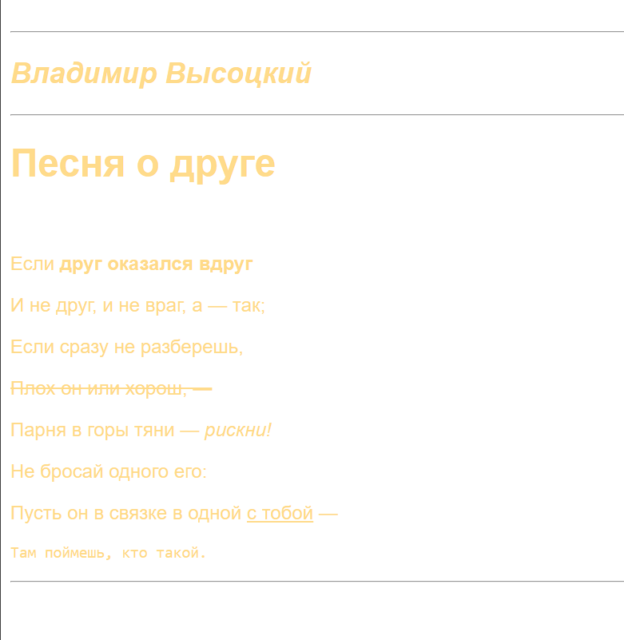
Обратите внимание:
bgcolor = #000000 не заключён в ковычки!
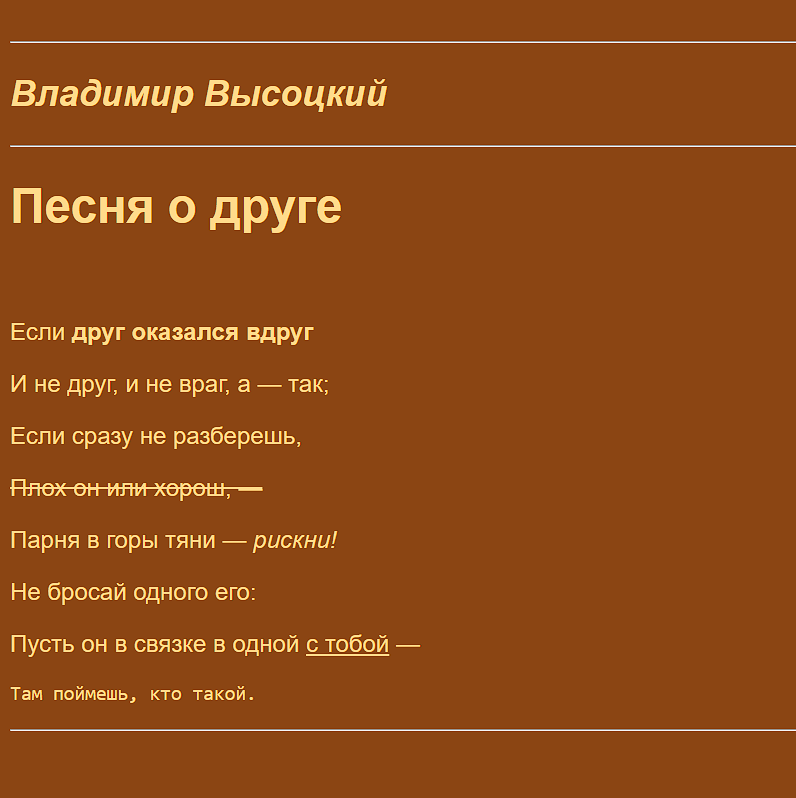
ДООЛНИТЕЛЬНО! Пронумеруйте абзацы.
<ol>
⠀⠀⠀<li>Первый пункт</li>
⠀⠀⠀<li>Второй пункт</li>
⠀⠀⠀<li>Третий пункт</li>
</ol>
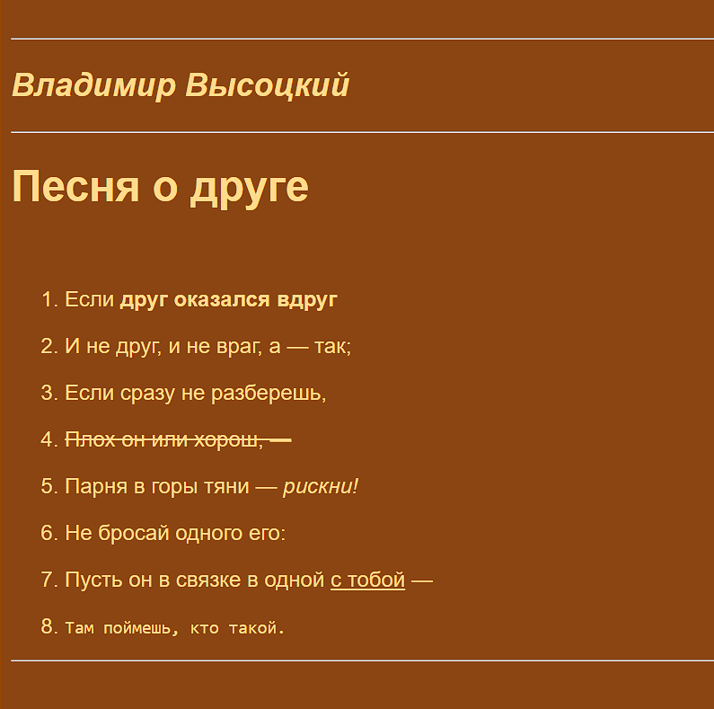
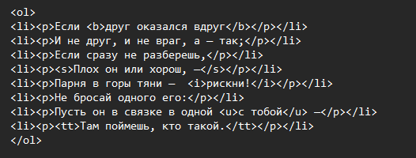
|
ШАГ 4 - Ссылки и изображения |
Ссылки:
создаются с помощью тега <a> и атрибута <href> (куда ведёт ссылка)
Изобрражения:
вставляются тегом <img> и атрибутом <scr> (путь к файлу)
ПРАКТИКА
ЗАДАНИЕ: найдите страничку автора вашего текста на википедии и вставьте как активную (кликабельную) ссылку на страницу в строку, где ранее указали его. после этого найдите место для фоторафии автора.
1. Сделайте ссылку.
выглядеть это будет так:
<a href = "ваша ссылка"> . . . </a>
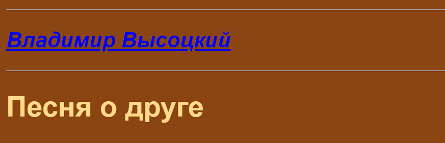
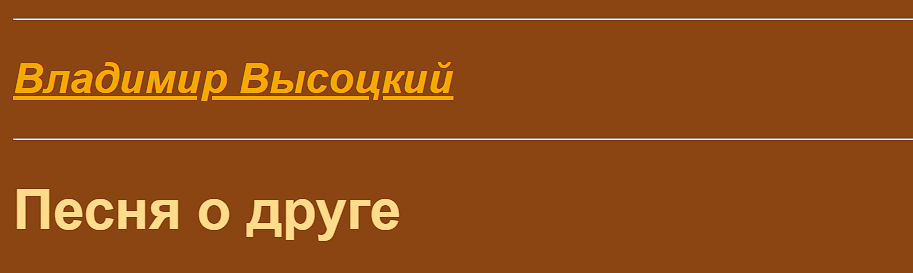
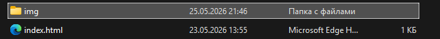
Путь к картинке:
не должен лежать через диски и папки, которые могут отсутствовать у другого пользователя! работайте только внутри папки сайта.
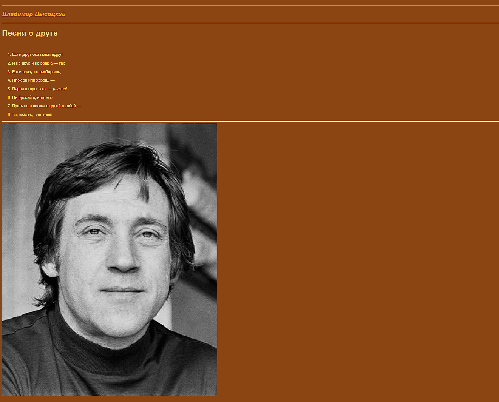
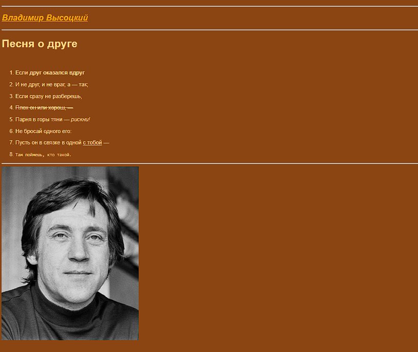
|
ШАГ 5 - Выравнивание текста |
Для того, чтобы текст автоматически не слипался влево, оставляя большое пространство справа, существует ввыравнивания текста. Для выравнивания текста внутри атрибута style нужно задать следующее:
<p style = "text-align: center"> текст по центру <p>
<p style = "text-align: right"> текст справа <p>
<p style = "text-align: left"> текст слева <p>
<p style = "text-align: justify"> текст по ширине <p>
Этот style применим в том числе и для тега заголовков (h1, h2, h3 и д.р)!
ПРАКТИКА
ЗАДАНИЕ: примените все указанные виды выравнивания как для параграфов (p), так и для заголовков (h1, h2).
ПОДСКАЗКА
Если желаете выравнять весь текст сразу, обратитесь к тегу body.
Вот и всё! После выполнения этих несложных заданий можно сказать, что у вас имеется самый базовый каскад для работы с html.
2026 г.
Авторы проекта:
Студенты гр.ИСИП 25-1 Янковский Иван и Цветкова Эрика
Связь с нами:
frogilenorezerv@gmail.com
eream.jc@gmail.com